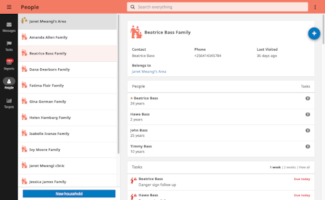

<form autocomplete="off" novalidate="novalidate" class="or clearfix pages" dir="ltr" data-form-id="training:admin_welcome">
<section class="form-logo"></section><h3 dir="auto" id="form-title">Getting started</h3>
<select id="form-languages" style="display:none;" data-default-lang=""><option value="en">en</option> </select>
  
  
    <section class="or-group-data or-appearance-field-list " name="/data/welcome"><label class="question non-select "><span lang="en" class="option-label active">
        </span><input type="text" name="/data/welcome/img" data-type-xml="string" readonly></label><label class="question non-select "><span lang="en" class="question-label active" data-itext-id="/data/welcome/instance_info:label">Welcome to your new CHT instance! It is running the <a href="https://docs.communityhealthtoolkit.org/reference-apps/maternal-newborn/" rel="noopener" target="_blank">Maternal and Newborn Health app</a>.</span><input type="text" name="/data/welcome/instance_info" data-type-xml="string" readonly></label><label class="question non-select "><span lang="en" class="question-label active" data-itext-id="/data/welcome/docs:label">To configure this instance for your specific workflows, see <a href="https://docs.communityhealthtoolkit.org/building/" rel="noopener" target="_blank">the documentation</a>.</span><input type="text" name="/data/welcome/docs" data-type-xml="string" readonly></label>
      </section>
    <section class="or-group-data or-appearance-field-list " name="/data/contacts"><label class="question non-select "><span lang="en" class="option-label active">
        </span><input type="text" name="/data/contacts/img" data-type-xml="string" readonly></label><label class="question non-select "><span lang="en" class="question-label active" data-itext-id="/data/contacts/add_contacts:label">Get started by <a href="https://docs.communityhealthtoolkit.org/building/contact-management/contact-and-users-1/" rel="noopener" target="_blank">adding contacts and users</a>.</span><input type="text" name="/data/contacts/add_contacts" data-type-xml="string" readonly></label>
      </section>
    <section class="or-group-data or-appearance-field-list " name="/data/community"><label class="question non-select "><span lang="en" class="option-label active">
        </span><input type="text" name="/data/community/img" data-type-xml="string" readonly></label><label class="question non-select "><span lang="en" class="question-label active" data-itext-id="/data/community/intro:label">The CHT is maintained by a community of people around the world.</span><input type="text" name="/data/community/intro" data-type-xml="string" readonly></label><label class="question non-select "><span lang="en" class="question-label active" data-itext-id="/data/community/forum:label">Introduce yourself on the <a href="https://forum.communityhealthtoolkit.org" rel="noopener" target="_blank">CHT Forum</a>! This is a great place to find answers and connect with others in the community.</span><input type="text" name="/data/community/forum" data-type-xml="string" readonly></label>
      </section>
  
<fieldset id="or-preload-items" style="display:none;"><label class="calculation non-select "><input type="hidden" name="/data/meta/instanceID" data-preload="uid" data-preload-params="" data-type-xml="string"></label></fieldset>
</form>